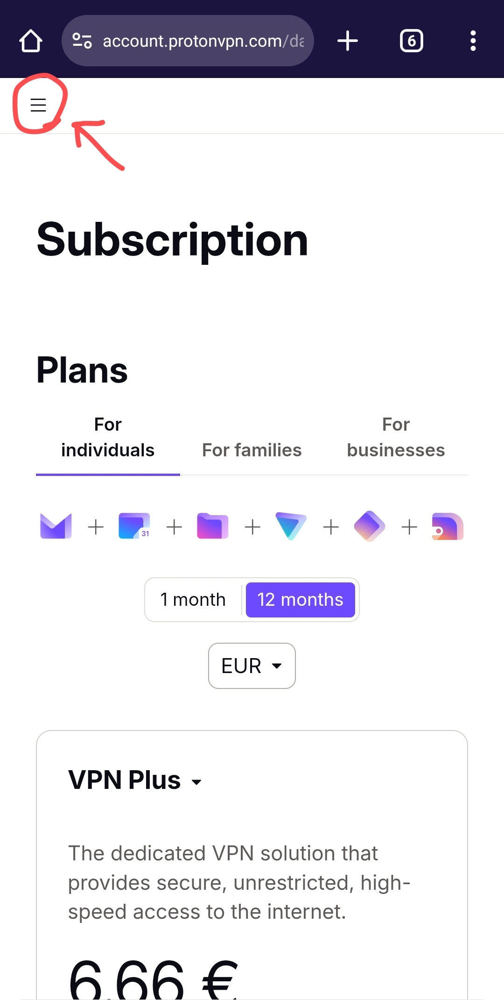
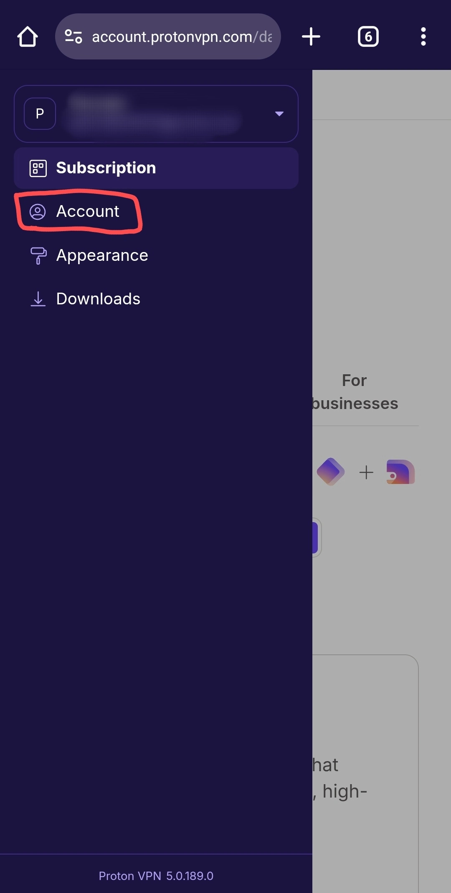
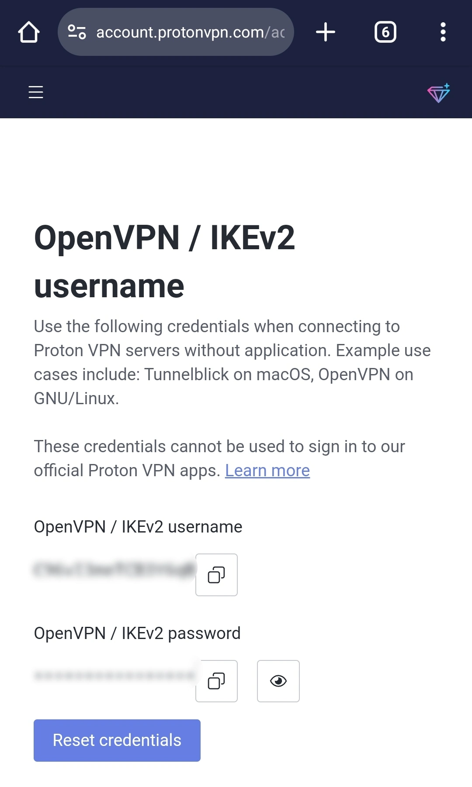
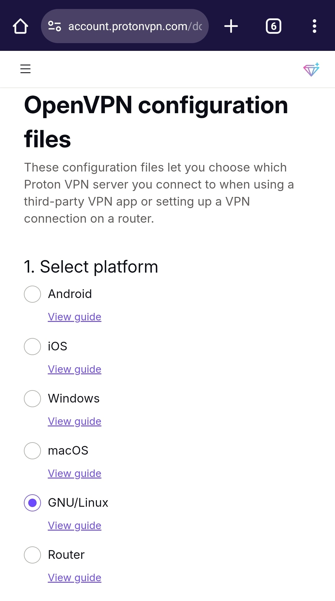
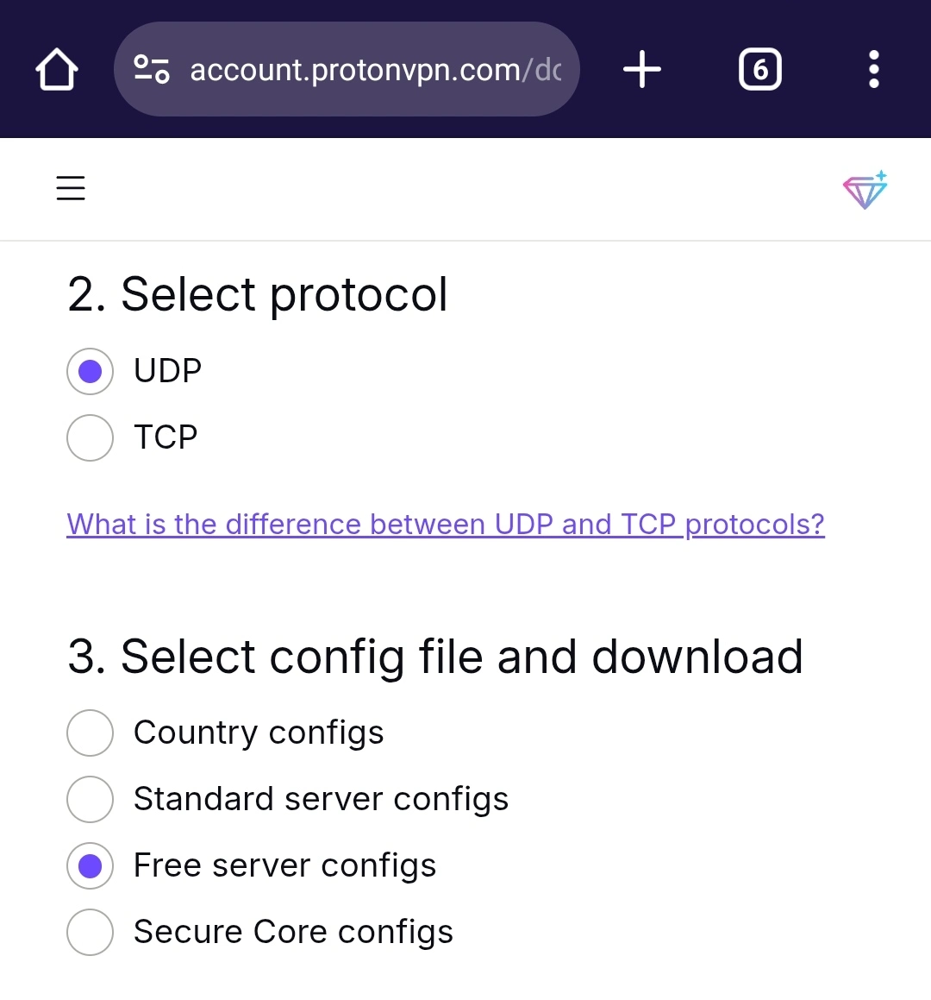
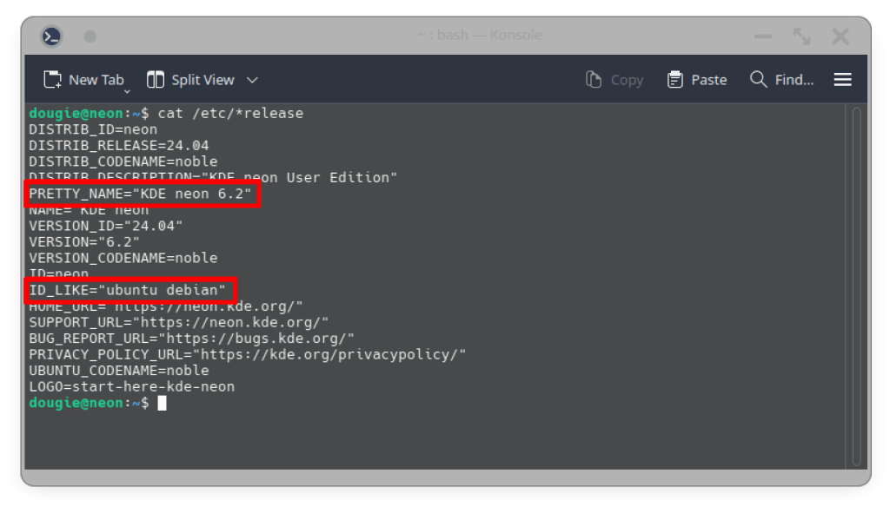

This guide page will cover the whole process of using ProtonVPN on Linux without
installing the app.
This guide was specifically written for those who have been blocked or restricted
from internet access by their government or internet service provider (ISP).
This guide requires you to install “network-manager-openvpn-gnome” on your Linux system.
Creating a Proton Account for necessary credentials
You will have to create a Proton account. Please, follow this guide to create a Proton account:
Open a Proton account
Obtaining the credentials from ProtonVPN website
If you have been blocked…
On your mobile device, connect to a VPN; ProtonVPN for Android is recommended since android users do not
need to open an account to use ProtonVPN.
For iOS devices, refer to your former VPN and connect to it.
The following steps can be done on your computer too. It is recommended if you have a stable VPN network
connection or unrestricted internet connection.
Phase 1: Getting your “OpenVPN / IKEv2 username” from ProtonVPN website
-
Sign in to your Proton account though this link: https://account.protonvpn.com.
-
On the top left corner, click the hamburger menu.

-
Then click on “Account”

-
Scroll down and find “OpenVPN / IKEv2 username” and copy them.

-
Save the credentials in a text file. You can create a text file in your file manager.
-
Be careful not to share it with
anyone.
-
You can only use one device at a time with the free
subscription so if you cannot connect to VPN on your device, try
resetting the credentials (step 4)
-
DO NOT TRANSFER IT THROUGH UNSECURE NETWORKS.
Phase 2: Downloading necessary configuration files from ProtonVPN website
-
Through the hamburger menu, go to the “Downloads” page.
-
Scroll down to “OpenVPN configuration files” and select your preferred option. In our case, it
is GNU/Linux.

-
Select your preferred protocol. Leave the config file option on default.

- UDP for faster VPN connection (Difficult to connect, Fast).
- TCP for connecting through heavily blocked networks. (Connect Easily, Slow)
-
Download your preferred country's server config file.
We strongly recommend downloading at least one config file for all the three free
countries.
Send the config files to your computer through your preferred methods.
Transferring credentials to your computer
To transfer the ProtonVPN credentials to your computer (Linux device) precisely follow the instructions
below.
Transferring through Bluetooth
-
Turn on Bluetooth on both devices: your phone and computer.
-
On your mobile device, open the file manager and share the text file with Bluetooth.
-
On your computer, go to settings and find the Bluetooth transfer setting/option.
-
Follow the on screen instructions to receive the file.
Transferring through Telegram
-
On your mobile device, open telegram.
-
Find your “Saved Messages” chat in telegram.
-
Send the credentials text file to “Saved Messages.”
-
On your computer, install telegram and login to your account.
-
Save the credentials text file to your document folder.
We do not recommend transferring the credentials as it is, since that is easier to be leaked or decoded
through unsecured networks.
Setting up the config file on your Linux device
This section requires you to have the config files and credentials on your computer.
Don't know what GUI you're running on?
If you do not know which GUI you're using, run the following command in the terminal:
cat /etc/*release
And look for PRETTY_NAME or related terms.

GNOME UI
-
Go to
Settings→Network→VPN→+
-
Choose “Import from file…”
-
Select your .ovpn file
-
A pop-up window will request you to fill in the credentials
-
Fill in the “User name” and “Password” as obtained from
ProtonVPN website
-
Tweak the server configuration if you know what you're doing
-
Click the “Save” button
KDE Plasma UI
-
Navigate to System Settings→Connections→Add new
connection (+)→Import VPN Connection
-
Select your .ovpn file
-
A pop-up window will come up
-
Change “Connection Type” to “Password with Certificates
(TLS)” if not
-
Fill in your “Username” and “Password” as obtained from
ProtonVPN website
-
Then click “Apply”
Cinnamon UI
-
Search for “Network Settings” or click on the WiFi icon (bottom right) and click
Network Settings
-
Click on plus (+) icon
-
Choose “Import from file…”
-
Select your .ovpn file
-
Fill in the “Username” and “Password” as obtained from
ProtonVPN website
-
Then click on “Add”
Activating VPN connections on your Linux system
Try to connect to all the connections or countries that you have configured on your system one by one.
That ensures seamless VPN connectivity at all times.
Conclusion
As of March 2025, there are still connectivity blockages on some services in Myanmar. ProtonVPN is featured on
this website since it provides privacy focused VPN connectivity, allowing activists and journalists to
freely execute their actions without being exposed to the so called “government” of this time.